Ваше рішення · журнал «ДентАрт» 2025 №3
Що у цьому випадку зробив автор? Протокол eLAB для досягнення точної колірної відповідності
WHAT DID THE AUTHOR DO IN THIS CLINICAL CASE? THE ELAB PROTOCOL
Що у цьому випадку зробив автор
Початкова ситуація — на сторінці 22.
Реабілітація пацієнтів в естетично значущій зоні потребує особливої точності та уваги до деталей. До них належать підбір кольору та яскравості, форма реставрації і стан м'яких тканин.
З метою максимального збереження інтактних тканин вирішено робити втручання лише в межах одного центрального різця 11. Таке завдання складніше для лікаря та зубного техніка, проте дозволяє досягти необхідного естетичного результату при мінімальному обсязі втручання.
Під час відновлення одного зуба ключовим фактором успіху є точна та гармонійна оптична інтеграція реставрації у природний зубний ряд.
Для реалізації цього завдання було використано протокол визначення кольору eLAB, розроблений німецьким зубним техніком Sascha Hein, членом групи Bio-Emulation.
Протокол eLAB – це стандартизована система цифрового підбору кольору зубів, розроблена для підвищення точності та відтворюваності у роботі з керамічними реставраціями.
- Використовується цифрова фотографія (RAW формату) з контрольованим джерелом світла і поляризаційним фільтром. Поляризаційний фільтр працює за принципом крос-поляризації, усуваючи відблиски та забезпечуючи чисту передачу кольору.
- У кадр обов'язково включається еталонна сіра карта (eLAB reference card), що дозволяє калібрувати фотографію.
- Фотографії аналізуються з наступним переведенням даних у колірний простір LAB.
- Отримані точні цифрові значення дозволяють технікові виготовити реставрацію, яка ідеально збігається з кольором натуральних зубів, без помилок візуального сприйняття.
Протокол eLAB стандартизує процес визначення відтінку, роблячи його незалежним від умов освітлення, камери чи людського фактора.
Обладнання, яке я використовував для роботи з eLAB:
- Повнокадрова бездзеркальна камера Canon R (режим зйомки ручних налаштувань: 1/125, F22, ISO 100).
- Макрооб'єктив Canon Macro RF 100 мм L.
- Макроспалах Сanon Macro twin lite MT24EX для рівномірного освітлення робочої зони (мануальний режим 1/1).
- Кронштейн для спалаху Axis flash bracket забезпечує фіксоване освітлення під кутом 45°.
- Ретрактори для щік та губ.
- Еталонна сіра карта eLAB Reference Card. Розміщується у кадрі для калібрування знімків і точного переведення колірних даних у простір LAB.
- Поляризаційні фільтри.
Кожен колір описується трьома координатами (LAB):
- L* (Lightness) – світлість кольору. Діапазон від 0 (чорний) до 100 (білий).
- a* – вісь зелений ↔ червоний. Негативні значення (-a*) – зміщення в зелений, позитивні (+a*) – у червоний.
- b* – вісь синій ↔ жовтий. Негативні значення (-b*) – зміщення в синій, позитивні (+b*) – у жовтий.
На першому етапі лікування було зроблено внутрішньоротове фото зубів з поляризаційним фільтром та сірою картою як початкове значення клінічної ситуації.
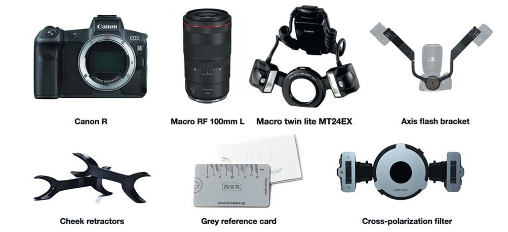
Це той рідкісний випадок, коли ми можемо почати працювати без попереднього воскового моделювання (Wax-Up) та перенесення Mock-Up у ротову порожнину для узгодження з пацієнтом.
У цьому клінічному випадку слід скопіювати і віддзеркалити сусідній зуб 21, щоб забезпечити гармонійну інтеграцію за формою в зубний ряд.
За допомогою А-силікону був виготовлений ключ у ротовій порожнині для виготовлення тимчасової реставрації прямим методом до початку препарування.
Під час препарування сусідні зуби були захищені металевою матрицею.
Вестибулярне маркування глибини препарування твердих тканин, а також редукція ріжучого краю робилися за допомогою маркувального бора (Komet 868В 314020). Зафарбовування вестибулярної поверхні зуба олівцем посилює контраст між препарованими та непрепарованими ділянками зуба і полегшує роботу. Горизонтальні борозни залишаються зафарбованими до досягнення бажаної глибини препарування. Проте остаточну глибину препарування твердих тканин зуба у цьому випадку продиктувала композитна реставрація.
Фінішну лінію на зубі 11 потрібно залишити на тканинах зуба, тому висікався весь композит. Дизайн реставрації – 3/4 коронка. У такому разі упор, що утворюється при препаруванні з палатинального боку, забезпечує правильне позиціонування при фіксації реставрації.
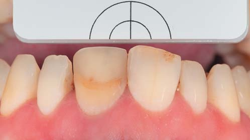
Препарування зуба провадилося за допомогою операційного мікроскопа. Створювався необхідний простір для керамічної реставрації на рівні м'яких тканин.
Після закінчення першої фази препарування алмазними борами Komet (крупнозернистими) була зроблена ретракція однією ниткою без просочення 000, яка забезпечує вертикальну ретракцію. Далі за допомогою полірувальних алмазних борів (з червоним маркуванням) ми змістили вестибулярну фінішну лінію апікальніше, до нового рівня зеніту. Це дозволяє сховати і зробити плавним перехід зуб – кераміка. Для передачі меж препарування в лабораторію було обрано метод ретракції за допомогою ретракційних ниток.
Перша нитка забезпечила вертикальну ретракцію, а друга нитка з просоченням (Sure-Cord 0, експозиція 5 хвилин) забезпечила горизонтальну ретракцію. Встановлювали другу нитку безпосередньо перед зняттям відбитків перфорованою металевою ложкою та А-силіконом (DGM, Honigum Pro), попередньо промазавши ложку адгезивом для ложок (Panasil Haftlack).
Адгезив між полівініл-силановим базовим відбитковим матеріалом та перфорованою ложкою забезпечує відсутність деформації на відбитках.
Перед фіксацією тимчасової реставрації на зуб 11 зробили фото обробленої кукси зуба з поляризаційним фільтром і сірою картою. Це додаткова інформація для зубного техніка про стан та колір кукси зуба.
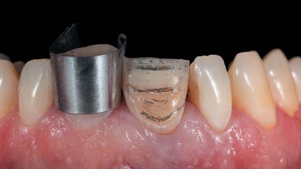
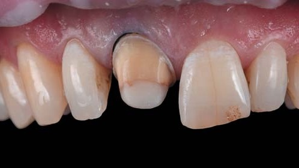
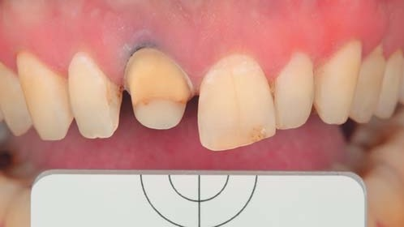
Для надійної фіксації тимчасової реставрації було проведено точкове протравлювання та бондинг без попередньої полімеризації.
Наступним етапом було створення тимчасової конструкції прямим методом і перенесення за допомогою силіконового ключа та самотвердіючої пластмаси бісакрил (DMG Luxatemp). Після вилучення силіконового ключа надлишки пластмаси в приясенній зоні були скориговані скальпелем.
На зубі 11 з тимчасовою реставрацією було зроблено полімеризацію адгезиву протягом 20 секунд.
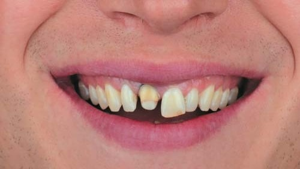
Відбитки та фото RAW формату передали в зуботехнічну лабораторію для виготовлення керамічної реставрації. У цьому випадку для відновлення зуба 11 був обраний матеріал літій-дисилікат з пошаровим нанесенням кераміки на вестибулярну поверхню.
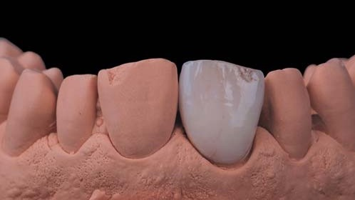
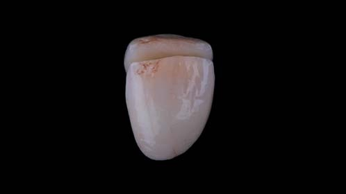
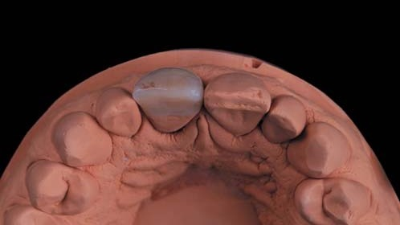
Перевагою протоколу eLab є віртуальна примірка та порівняння готової керамічної реставрації зуба 11 і сусіднього зуба 21. Цифрова примірка за протоколом eLAB дозволяє зубному техніку проводити оцінку майбутньої реставрації і точно підбирати колір та яскравість матеріалу. Це усуває потребу фізичних примірок і підвищує точність фінального результату.
Зубний технік, використовуючи дві фотографії – еталонну (із сірою картою) та контрольну (із сірою картою), може розрахувати значення ΔE, що відображає різницю між кольором натурального зуба 21 та виготовленої керамічної реставрації зуба 11.
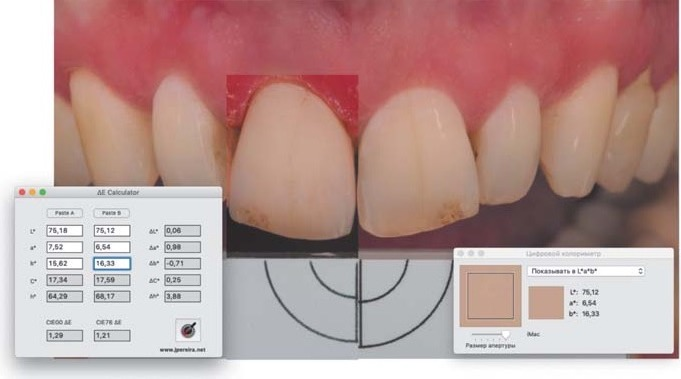
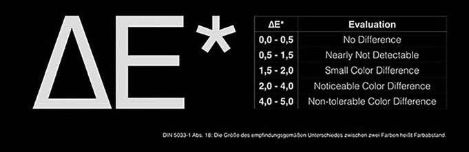
ΔE (Delta E) – це числовий показник колірної відмінності в системі LAB: чим менше його значення, тим ближчий відтінок керамічної реставрації до натурального зуба.
Практичне значення ΔE:
- ΔE 0,0–0,5 – No Difference. Відмінностей немає. Колір реставрації та натурального зуба ідентичний навіть при збільшенні та ідеальному освітленні.
- ΔE 0,5–1,5 – Nearly Not Detectable. Відмінність практично непомітна неозброєним оком. У клінічній практиці вважається ідеальним результатом.
- ΔE 1,5–2,0 – Small Color Difference. Незначна різниця у кольорі. Її побачить лише фахівець при уважному розгляді, але для пацієнта вона зазвичай не критична.
- ΔE 2,0–4,0 – Noticeable Color Difference. Відмінність помітна при звичайному огляді. В естетично значущій зоні часто потребує корекції, особливо під час реставрації передніх зубів.
- ΔE 4,0–5,0 – Non-tolerable Color Difference. Невідповідність кольору чітко виражена та неприйнятна в клінічному результаті. Потрібно переробляти реставрацію або коригувати кольори.
Віртуальна примірка в зуботехнічній лабораторії показала значення ΔE 1,21. Відмінність практично непомітна неозброєним оком. У клінічній практиці вважається ідеальним результатом.
Під час наступного візиту пацієнта в клініку робимо примірку та фіксацію керамічної реставрації зуба 11.
Першим кроком було зняття тимчасової реставрації зуба 11 і полірування кукси від залишків адгезиву.
Примірка постійної реставрації на суху поверхню (Dry Fit) дає змогу контролювати точність прилягання конструкції.
Переконавшись, що керамічна реставрація задовольняє естетичний запит пацієнта та стоматолога, можна братися до адгезивної фіксації.
Адгезивна підготовка кераміки
Очищення керамічної реставрації було зроблене повітряно-абразивним методом з використанням оксиду алюмінію 27 мкм, що ефективно видаляє забруднення після внутрішньоротової примірки і створює мікрошорсткість поверхні, збільшуючи площу адгезії. Динамічне протравлювання реставрації з літій-дисилікату плавиковою кислотою 4,5% протягом 20 с. Експозиція етилового спирту 96% на поверхні кераміки 30 с для очищення від залишків плавикової кислоти.
Силанізація поверхні кераміки за допомогою Monobond Plus (Ivoclar) для створення внутрішнього зв'язку між реставрацією та фіксуючим матеріалом.
На силанізовану поверхню кераміки було внесено адгезив системи ClearFil SE Bond 2 (Kuraray), експозиція 20 с, потім надлишки прибрані повітрям. Внесення фіксуючого композиту Variolink Esthetic LC.
Для запобігання затвердінню композитного цементу реставрації помістили у помаранчевий світлозахисний бокс.
Сусідні зуби були захищені тефлоном.
Також було зроблено повітряно-абразивну підготовку кукси зуба 11 порошком оксиду алюмінію 27 мкм.
Динамічне протравлювання зуба протягом 30 с. Адгезивна підготовка здійснювалася системою ClearFil SE Bond 2 (Kuraray).
Надлишки фіксуючого матеріалу прибрали пензликом з вестибулярної поверхні та провели полімеризацію реставрації. Для видалення надлишків цементу в апроксимальних контактах використовували флос.
Після фіксації реставрації зробили контрольні фотографії з використанням поляризаційного фільтра та без нього.
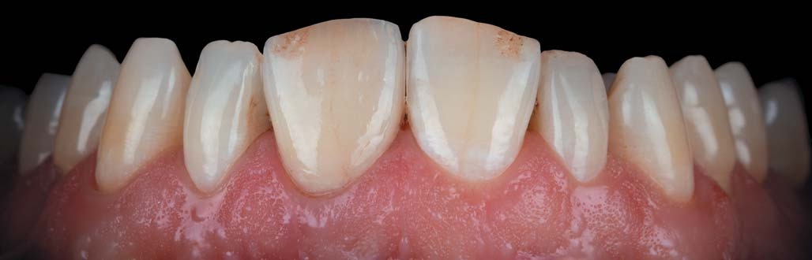
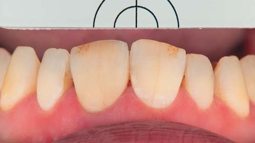
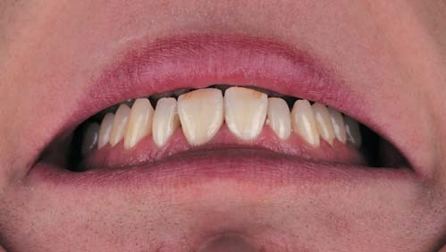
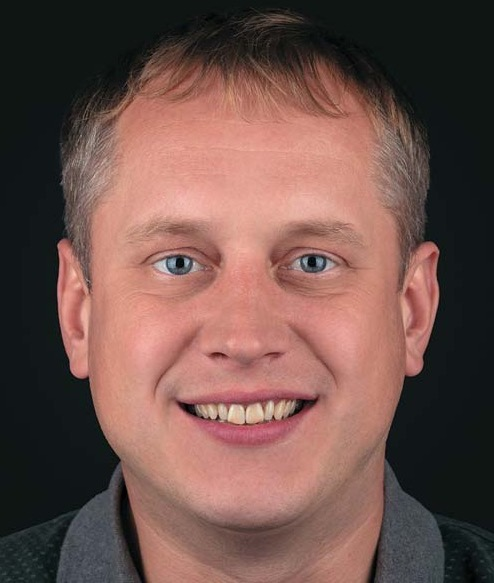
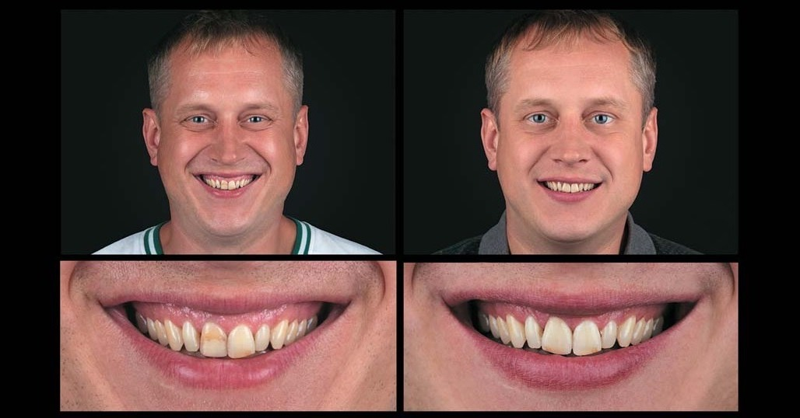
Висновки
Протокол eLAB став ключовим інструментом для досягнення точної колірної відповідності та бездоганної естетики. Чітка цифрова передача даних та злагоджена робота лікаря і зубного техніка дозволяють передбачувано інтегрувати окрему керамічну реставрацію в зубний ряд та відтворювати гармонію усмішки навіть у найскладніших клінічних випадках.